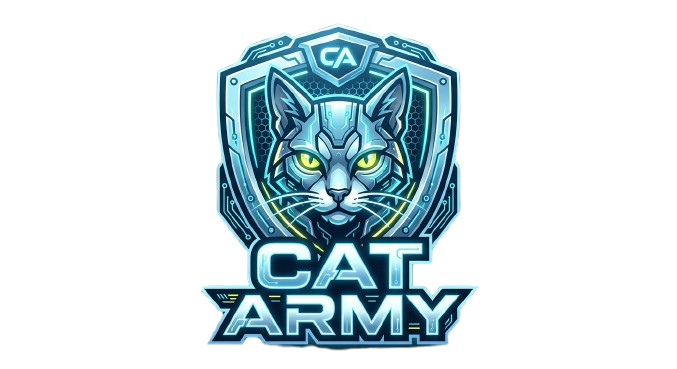
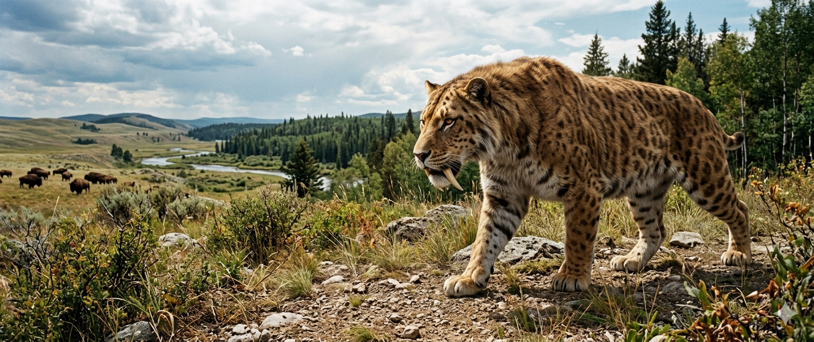

Hi Guys Today we are going to talk about Extinct Cats! Before we were ruling your houses and demanding treats at 3 AM, our ancestors were absolute titans of the wild. We are going to look at the legendary beasts that paved the way for our glorious feline legacy. Let's Dive Deep 🔥🔥🔥
Forget the movies; these guys were the ultimate ambush predators of the Ice Age. Their canine teeth could grow up to 7 inches long! They didn't roar like modern lions, but they had incredible jaw strength designed to deliver a precise bite to the throat of their prey. A total classic, if you ask me.
You think modern lions are big? The American Lion (Panthera atrox) was about 25% larger than the modern African lion. They were so massive that they could take down giant bison and even young mammoths! sddfjsdlkjf meow meow jgjfgjfejosg ddddddddd—Whoops! Sorry, I just fell asleep on the keyboard again. The dream of chasing giant bison is just too real for me.
Okay, this one isn't "real" history, but it is a LEGEND. According to the Far Cry Primal scrolls, the Bloodfang is the king of Oros. While my ancestors were busy being real beasts, this guy was busy being a legendary, unkillable monster that scares the fur off even the toughest cavemen. Respect to the gamer cats who tamed this beast!
The Cave Lion (Panthera spelaea) was a powerhouse that roamed Eurasia. Despite the name, they didn't live in caves—they just hunted near them! They were larger than any big cat you see today and had a very sturdy build. They were the original tough guys of the feline world.
So, even though these giants are gone, their DNA lives on in us—the house cats of today. We might be smaller now, but we still have the heart, the claws, and the attitude of the apex predators who ruled the prehistoric world. We might act like we own the place—and honestly, according to science, we absolutely do! Help us move toward total world domination—or at least, total living room domination. 😼